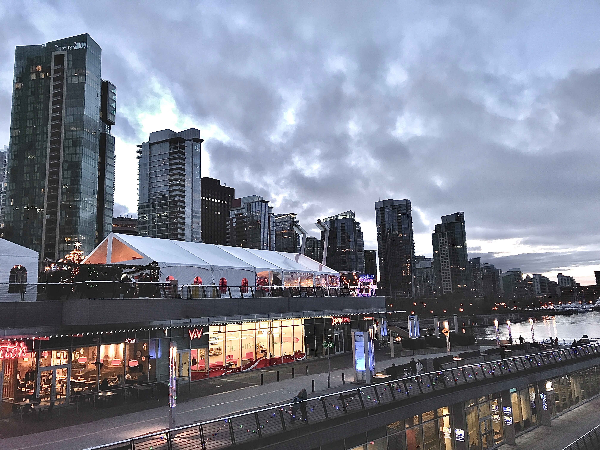

Recap: Vancouver, BC and Seattle Washington 2019
December 2019 was the second time in my life that I traveled across the Canadian border. Little did I know I would meet people from all over the world and make connections that will hopefully last a lifetime. I also experienced my first big academic/professional conference, NeurIPS, but I will mainly recap my travel stories in this post.

The world is indeed small...make sure you are representing who you want others to see you as at all times. For example, Alex and I were waiting to board the first leg of our flight to Vancouver, BC. We had a stop in Seattle, Washington. As we were waiting to board, I thought I recognized someone that I had lunch with one time who was a part of a lab I did some work in. Maybe before 9th grade, I would not have walked up to him and strangely asked, "Oh yeah didn't we eat lunch together with so-and-so before?" Turns out, it was him! He was flying out to the west coast to present at a Water Conference on Glacier Science for his Post Doc. Soon after that, Alex and I ran into someone who recently graduated from Pitt and was going to the same conference as us!
Airports are catalysts in making friends.
After arriving safely in Seattle, we impatiently and excitedly waited for the next flight to take us to Vancouver. Several delays occured causing our plane to get us to Vancouver around 1am PST! Coming from the east coast....this really sucked. But, we met up again with the Pitt alumni who was attending the conference as well and started conversation. He introduced us to his coworker/friend...I forget their exact relationship. ANyways, both of them are doing great research contributing to safety and social good of our society. As we were talking about machine learning research, as one does in an airport, another conference attendee joined our conversation. He was coming from Paris, France! I commend him for his english skills especialally when he was very jetlagged. He was presenting some of his research in one of the neurscience workshops which I attended to show him support. The conference didn't even start yet and I already felt in over my head about being an undergrad and having no experience with this jargon or research.
Invest in personal growth ~ make sure to travel
Though I did not travel to Vancouver alone, I still felt very independent. I went with Alex and Anastasia, but they had their own schedule. I heard stories and research from people all around the world. Talked with researches from IBM, Apple, Google, and Nvidia. From working on data science for the social good to trying to create and provide the best hardware to save energy for running models, I learned so so much! And it helped that many of them were also from all across the world...I did not feel like I was in Canada. I felt like I was in a bowl of culture which was amazing! I have connections in Isreal, China, France, Montreal, and many many other places. Conferences in a new city where no one has been is almost like a championship game at a neutral playing field. All of us enjoyed touring the city and finding the best bars, night clubs, and places to take a quick nap or read a research paper. Honestly, paying to attend this conference and touring Vancouver at the same time was definitely worth it. Better than a vacation to the beach doing nothing.
A quick visit to the rainy city ~ Seattle

Connect with friends, network with who you aspire to be.
--WORDS--
>